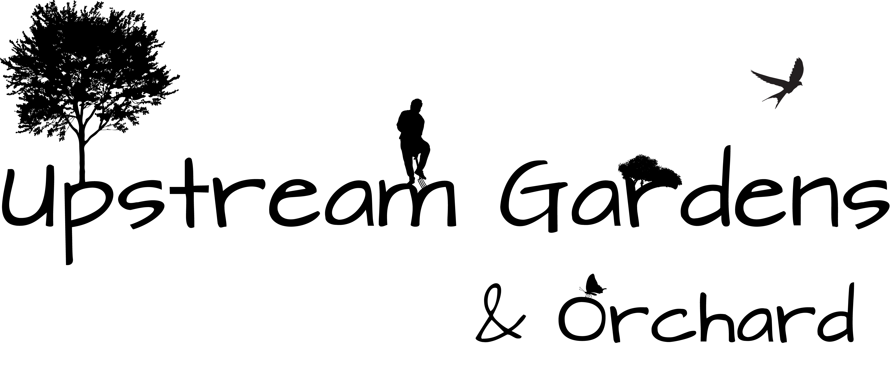

Education
- Bachelor of Arts Degree, Central College, Pella, IA, May 2019 (anticipated)
- Computer Science
- Psychology
- President of Drone Club (2017-present)
- Community Outreach Director of Computer Science Club (2015-present)
- PR Manager of Computer Science Club (2018-Present)
- Vice President of Computer Science Club (2015-2018)
- Vice President of Drone Club (2016-2017)
- Treasurer of Scholte Hall Council (2016-2017)
Majors
Campus Involvement
Work Experience
- Contributed lean and concise VB.NET code daily to shared git repos
- Analyzed user feedback regularly and integrated it into development
- Utilized constant, consistent, and clear communication with team members to ensure peak efficiency
- Updated college websites daily using WordPress content management
- Utilized Vagrant, Bash, and Git technologies daily as part of the development cycle
- Developed custom WordPress themes from scratch for custom projects
- Instructed students & employees on use of electronics and online college services
- Utilized problem solving skills in repairing malfunctioning electronics
- Offered guidance in clear and helpful ways using effective interpersonal skills
Software Development Intern - Lean Technologies (Summer 2018)
Student Web Developer - Central College Communications (2016-present)
Student Technician - Central College IT Services (2015-present)
Personal Projects
Apps
doot
- Created a iOS game from scratch as a means of improving my Swift skills, as well as learning how to leverage SpriteKit and ARKit
- This app will have a page here once released, with information about downloading it
- See my portfolio page for more detailed information on this project
Websites
Upstream Gardens
- Utilized PHP to make an easily owner updatable small business site
- See my portfolio page for more detailed information on this project
AndrewGorman.co
- Leveraged my web design skills to design a responsive website from scratch, utilizing several JS libraries to build my own self-promotion platform
- See my portfolio page for more detailed information on this project
Logo Design (Hover over them with your mouse!)
Logo Design
- Upstream Gardens logo 
- Personal Logo
Skills and Proficiencies
Languages
- Proficient in:
- HTML & CSS
- PHP
- Swift
- Java
- Visual Basic
- Python
- Currently improving:
- JavaScript
- SQL
- React
- C#
Operating Systems
- MacOS
- Windows
- Ubuntu
Software
- Xcode
- Visual Studio
- Adobe Creative Suite
- XD
- Premiere Pro
- Lightroom
- Illustrator
- Photoshop
Other Technologies
- Git
- Bash
What i'm looking for in a job
I am actively looking for a full time position in the Des Moines area starting May of 2019
My main positions of interest are:
- Mobile Application Design / iOS Developer
- Designing and shipping apps for iOS utilizing my skills in swift, as well as integrating my responsive web design skills
- Software Developer
- Utilizing my experience either in Visual Basic, Java, or C#, in development of cutting edge software solutions
- Web Developer
- Utilzing my experience in building and maintaining websites either through static hosting solutions or through a content management service such as wordpress
My ideal work environment:
- Constantly challenges me to learn while developing cutting edge solutions to real world problems
- Small team environment with high communication
If you think you have a position I would be a good fit for, please don't hesitate to connect with me on LinkedIn!
Please use LinkedIn to contact me.